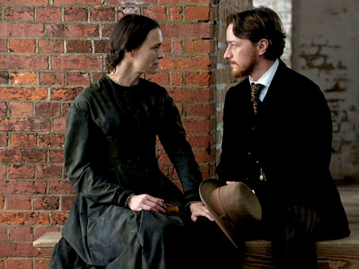

|
Although academic journals such as The American Historical Review and The Journal of
American History have expanded their focus to consider cinema, most historians still seem
to approach historical films with considerable suspicion. Thus, the American Historical
Association's (AHA) Executive Director James R. Grossman demonstrated both excitement and
trepidation when he introduced a screening of The Conspirator on the last evening
of the AHA's 2011 annual meeting. Of course, the AHA has featured film sessions at

Robert Redford on the set of The Conspirator
|
previous meetings, such as the well attended 1995 discussion of filmmaker Oliver Stone's
Nixon--an evening event in which Stone as well as George McGovern and Arthur Schlesinger,
Jr. addressed the assembled scholars.
The 2011 film session, however, was somewhat different as, despite the disclaimer of
Grossman, the AHA appeared to be endorsing a film project on which members of the
historical organization served as consultants. The Conspirator is the first
completed project of the American Film Company. CEO Joe Ricketts, founder of the online
brokerage firm Ameritrade and a member of the family which owns the Chicago Cubs,
explained to the assembled historians that his goal is to produce high quality and
entertaining feature films which will attract adult audiences and be historically
accurate. Ricketts asserted that with the rich variety of stories offered by American
history there is no need for filmmakers to fabricate the nation's past. The producer
concluded that if The Conspirator is successful, the American Film Company is
considering other projects such as a film on Paul Revere based upon the scholarship of
David Hackett Fischer.
The production values of The Conspirator are certainly first rate. The film is
directed by Oscar-winning filmmaker Robert Redford, and the cast includes such respected
performers as Robin Wright, James McAvoy, Kevin Kline, Evan Rachel Wood, Tom Wilkinson,
and Danny Huston. Budgeted for approximately $20 million, The Conspirator will be
distributed for theatrical release in the spring by Lionsgate and Roadside Attractions.
Questions of historical accuracy were responded to at the AHA session by screenwriter
James Solomon and historical consultants Kate Clifford Larson (Simmons College), Thomas R.
Turner (Bridgewater State College), and Frederic L. Borch III (Regimental Historian and
Archives, U.S. Army Judge Advocate General's Corps). The conclusion of the panel was that
the film deserved high marks for its historical detail regarding the case of Mary Surratt,
who was executed for conspiracy in the assassination of President Abraham Lincoln. On the
other hand, several members of the audience questioned whether it was really possible to
make a motion picture about the Civil War without mentioning slavery. Thus, The
Conspirator may be perceived as getting the details right, but missing what scholar
Robert Rosenstone describes as the larger historical truths such as placing slavery at the
center of our discussion on the Civil War.
Although the film focuses upon the trial of Mary Surratt (Robin Wright) by a military
tribunal, the story is told from the viewpoint of her attorney Frederick Aiken (James
McAvoy), who was a Union war hero before resuming his law career. Aiken is reluctant to
accept the Surratt case, but he is assigned the case by Reverdy Johnson, a former attorney
general currently serving as a United States senator from Maryland. Although, initially
convinced of Surratt's guilt, Aiken is impressed with the quiet dignity of Surratt as well
as the courage and pluck of her daughter, Anna Surratt (Evan Rachel Wood). Aiken begins
to harbor doubts about the guilt of Surratt; accusing the government of pursuing the death
penalty as a bargaining point to achieve the arrest of her son John Surratt (Johnny
Simmons). Despite pleas from by Aiken, the son does not come forth to save his mother.
Meanwhile, Aiken, as a surrogate son, battles heroically to spare the life of Surratt.
His vigorous defense alienates Aiken's family and friends, and his disillusioning
experience with the Surratt trial leads Aiken to abandon the law and pursue a career in
journalism. Although Surratt confesses to her knowledge of a plot to kidnap Lincoln, the
|

James McAvoy and Robin Wright in The Conspirator
|
film remains ambivalent as to whether she was involved in the conspiracy to murder
Lincoln, Secretary of State William Seward, and Vice President Andrew Johnson. The
historians on the AHA panel, however, assumed that Surratt was probably involved with the
murder conspiracy, but they did acknowledge that the government employed the prosecution
of Surratt to gain leverage against her son.
The villains of the film are Secretary of War Edwin Stanton (Kevin Kline) and his
deputy, Judge Advocate General Joseph Holt (Danny Huston). Stanton dismisses Aiken's
claims for leniency by citing national security concerns. The American public demands
swift and certain justice to put the assassination behind them, while Southerners need to
understand that continued resistance and plots will not be tolerated by the government.
In other words, a defiant Stanton makes it clear that issues of security must trump
concerns regarding due process and justice. Thus, as several members of the AHA audience
suggested, it becomes easy to read the film as an allegorical commentary on the response
of the Bush administration to the terrorist attacks of 9/11. In this reading of The
Conspirator, Stanton becomes a Dick Cheney figure intent upon using almost any means
necessary to prevent further acts of treason and terror. Stanton insists upon employing
military tribunals to try the civilian defendants of the Lincoln conspiracy, not trusting
juries and legal technicalities for these 1865 versions of civilian enemy combatants.
Images of Guantanamo Bay detainees are evoked by the Spartan conditions in which the
prisoners are incarcerated, as well as the hoods worn by the male defendants.
Screenwriter Solomon, however, asserts that that the script for The Conspirator was
written before 9/11. Nevertheless, it would certainly appear that doubts about the
Patriot Act and concerns over violations of the civil liberties of those incarcerated in
the global war on terror contributed to getting this script to the screen.
Yet, Solomon insists that his script is really rather ahistorical. He uses the stories
of Mary Surratt and Frederick Aiken to examine the love of a mother for her son, alongside
a surrogate son prepared to assume the role abandoned by John Surratt. This confession
may explain why several women at the AHA screening expressed disappointment that a film
ostensibly focusing upon a female protagonist becomes, in fact, a motion picture about the
relationship between a mother and a son. The film belongs to Frederick Aiken and not Mary
Surratt.
But this is not the most troubling issue regarding the film. As one AHA member
observed, is it really possible to make a film about the Civil War era and not mention the
word slavery? The Southern Surratt family had been slaveholders before falling into more

Danny Huston in The Conspirator
|
difficult economic times, but this fact is not alluded to in the film. Instead, Aiken
observes that he is as dedicated to his cause (the Union) as Surratt is to her cause.
However, the cause to which Surratt has pledged herself and her family is never
identified. Thus, it is possible for viewers to provide alternative answers to this
question which deny the centrality of the slavery issue to the origins of the Civil War.
Those who attended a secessionist ball in Charleston, South Carolina may assert that they
are commemorating a commitment to states' rights rather than celebrating an effort to
preserve the institution of slavery. And The Conspirator fails to offer any
cinematic challenge to such an assumption. One may view The Conspirator free from
the disturbing questions of race and slavery. Perhaps this will make the film appealing
to a larger audience, but it will do little to foster popular understanding of the Civil
War as we observe the 150th anniversary of that conflict.
The Conspirator is an entertaining film which includes more accurate historical
detail than most Hollywood productions, but it misses some of the larger historical truths
and issues which must be examined to understand America in the 1860s and the legacy of
slavery and the Civil War. Let us hope that the complexities of the American Revolution
are better addressed in the proposed film on Paul Revere.
Source: Ron Briley, History News Network
(February 6, 2011).
|